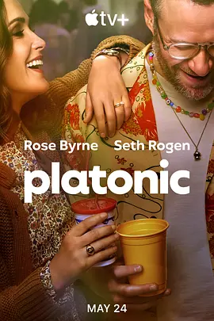

7.8
柏拉图关系 第一季
Platonic Season 1
2023
美国
评分 7.8
导演:
尼古拉斯·斯托勒
演员:
塞斯·罗根 / 萝丝·拜恩 / 安布里特·米尔豪斯 / Max Matenko / 特雷·黑尔
类型:
喜剧,爱情
剧情简介
故事围绕一对多年未联络的昔日好友展开。西尔维与威尔在年轻时关系亲密，却因为彼此的人生选择而逐渐疏远。多年后，一条试探性的讯息重新打开了尘封的情感窗口，两人在咖啡馆里的第一次重逢略显笨拙，却又带着旧日默契的悄然回温。西尔维正努力平衡育儿与自我需求，威尔则在事业与感情的混乱中不断漂浮，两人的性格在碰撞间逐渐显露真实的一面。随着互动逐渐增多，他们开始频繁走进对方的生活——深夜短信、临时相聚、小小的冒险、几杯不该喝的酒。这份“纯友谊”像是一股突然闯入的旋风，既带来久违的轻松与欢笑，也搅乱了生活的稳定节奏。西尔维的家庭开始察觉到她的变化，威尔的事业也因情绪波动陷入波折。剧集在轻快的笑点与细腻的观察之间不断切换，展示成年友情微妙而复杂的张力，也让人看到在责任、关系与自我之间做抉择时的犹疑与诚实。